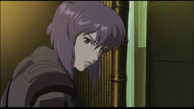

| Aramaki is very intelligent and resourceful enough to control the unique personalities of Batou and Kusanagi. He has been Chief of the secret intelligence agency for as long as anyone can remember. He would rather get his job done and hates to intervene in politics. However, he is also the Machiavelist who doesn't mind getting his hands dirty in pursuit of duty. His personality is too complex to perceive what he is actually thinking |
|  | All background info about Kusanagi is unknown, but assuming from her nick-name, she may have been in military service before. She is an expert on unlawful activity, secret intelligence, and demolition. The "Major" was scouted from the special maneuver team of the Ministry of Home Affairs. She commands Batou and Togusa, which makes her the number two person in Section 9. Kusanagi had her body changed to that of a cybernetic one; Motoko's body is almost completely robotised and only a part of her brain is from her original body. She has an early 20's cyborg body, but actual age is estimated at being in her late 30's. Her sub-brain can access any kind of computer network on the Earth. The appearance of the Puppet Master has caused her to suspect the existence of her very soul or "ghost". |
| An expert of unlawful activities like Motoko, he has been working as her partner for several years. His role is to support and control Kusanagi (who tends to go too far). They have been working together so long that they have grown accustomed to each other. His personal life is unknown. |
| Togusa is in his late 20's and married. He is the rare case of a person who has transferred to Section 9 from the police department, after being scouted by Kusanagi. Even though his brain has a connection to the cybernet, most of his body is still original. Togusa is considered an outsider by the other members of Section 9, who are mostly cyborgs transferred from the military. |
| Nakamura's territory is different from Section 9, however, after the Puppet Master incident, he launched a secret operation, trying to outmaneuver Aramaki and Section 9. He is more likely to go "by the book" than Aramaki. |
| This is the program developed by the Ministry of Foreign Affairs for their diplomatic conspiracy activities. It is connected to all the computer networks in the world. After accessing various kinds of databases and programs, it reached sentience and claimed itself a life form. |